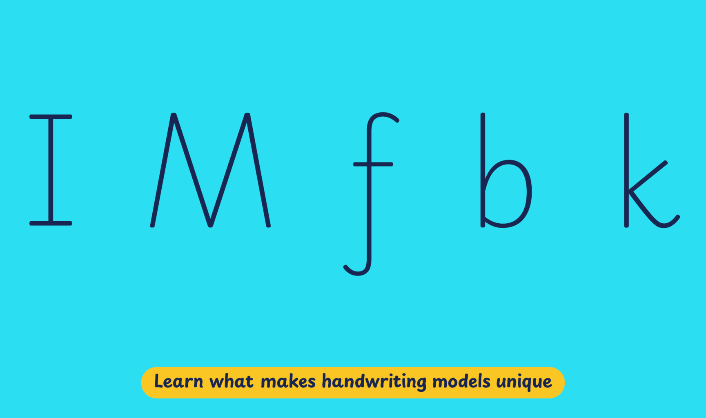

Italy holds an important place in the historical development of handwriting styles. Handwriting produced in the Latin script finds its roots in the models produced during the Italian Renaissance. The most prevalent form of handwriting taught in Italy is an upright cursive style developed in the early to mid-20th century, which, according to handwriting expert Francesco Ascoli, was prescribed in the country’s national guidelines in 1945.
At the beginning of the 21st century, the decline in the quality of handwriting in Italy caught the attention of the educational community. To rectify this situation, educators and handwriting experts started to explore different ways to improve instruction in primary schools by revamping approaches and resources for traditional handwriting education, or introducing new teaching schemes. The Scrittura Corsiva modern cursive project has gained significant recognition among the latter.
Playwrite Italia Moderna is a variable font with a weight range from Thin (100) to Regular (400), and supports over 150 Latin-based languages.
To contribute, see github.com/TypeTogether/Playwrite.
This is a fully joined modern cursive, completely upright, with short ascenders and descenders. it has simplified print style capital letters. Identity traits: It has serifs and 'M' has splain legs. Lowercases use descender loops to connect with the next letter in 'f', 'g', 'j' and 'y'. 'p' and 'b' have closed bowls, 'k' is written with two strokes, and 'f' is missing its top loop.

Playwrite Italia Moderna appears in font menus with a two-letter country code
‘IT‘ and a the word ‘Moderna‘, Playwrite IT Moderna. It features four
styles: Thin, ExtraLight, Light, and Regular.
The download .zip file includes the variable font and standard static ttf fonts
for each style.
The Playwrite school fonts are based on the findings of Primarium, a groundbreaking educational effort that documents the history and current practice of handwriting models taught to primary school students worldwide. This typographic engine serves teachers, educators, and parents by generating localized libre fonts. These Playwrite fonts are complemented by Playpen Sans, an informal and fun typeface designed for annotations, instructions, and student notes – that also includes emojis.
For more information about the Primarium project, visit primarium.info, and to learn more about handwriting education in Italy, see primarium.info/countries/italy.
Windows: Download the font file to your computer. Navigate to where you saved the font file and double-click it to open. Click the "Install" button at the top of the font preview window. The font is now installed and ready to be used across your apps.
macOS: After downloading the font file to your Mac, right-click it in Finder and select "Open With" > "Font Book". Then, click "Install Font" in the font preview window that pops up. The font is now installed and ready to be used across your apps.
The Playwrite font family uses complex OpenType features to generate connected writing. Some common applications require these features to be manually activated.
Note: This font family doesn't include Bold or Italic styles, so please avoid applying them in text editors. If you use the common 'B' and 'I' buttons, you will automatically generate low-quality styles.
Google Docs and Slides: From the font selector drop-down, go to "More Fonts" and search for the desired font name, in this case, "Playwrite IT Moderna", and click OK. If some text is already selected, the font choice will apply.
Microsoft Word: Go to Format in the Menu bar, select Font, and then the Advanced tab. Activate "Contextual Alternates" and "Kerning for fonts below" to apply these settings to all text sizes.
LibreOffice: In macOS, to select the different styles, go to Format in the Menu bar, select Character, and use the Typeface menu.
Adobe InDesign: Open the Paragraph Panel and select Adobe "World-Ready Paragraph Composer" from the contextual menu.
Adobe Illustrator: Navigate to Preferences > Type, check the "Show Indic Options" box, and close preferences. Then open the Paragraph Panel and select "Middle Eastern Composer" from the contextual menu.
Adobe Photoshop: Access the Paragraph Panel, then choose "World-Ready Layout" from the contextual menu.
The above instructions are also available in PDF format here.